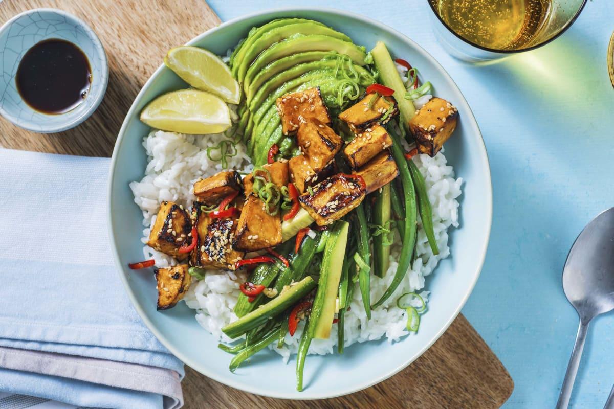

Vegan Bowl

Ok, I'm vegan now.
This recipe is actually from Hello Fresh and it got me into exploring vegan alternatives. It's a
refreshing & healthy meal for summer (or any other season if you want ^-^ ).
Ingredients
- 2 cups jasmine rice
- coconut milk
- 1 Sweet Potatoe
- 1 Avocado
- 1 lime
- 1-2 green onions
- 3 garlic toes
- 1 cucumber
- 150g green beans
- 3 spoons soy sauce
- 1 spoon sugar
- optional: 1 chilli
Recipe Instructions